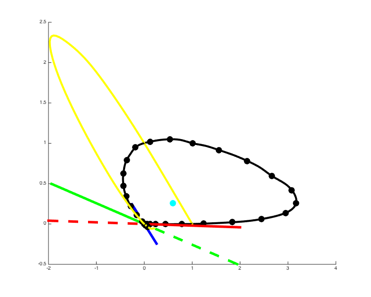
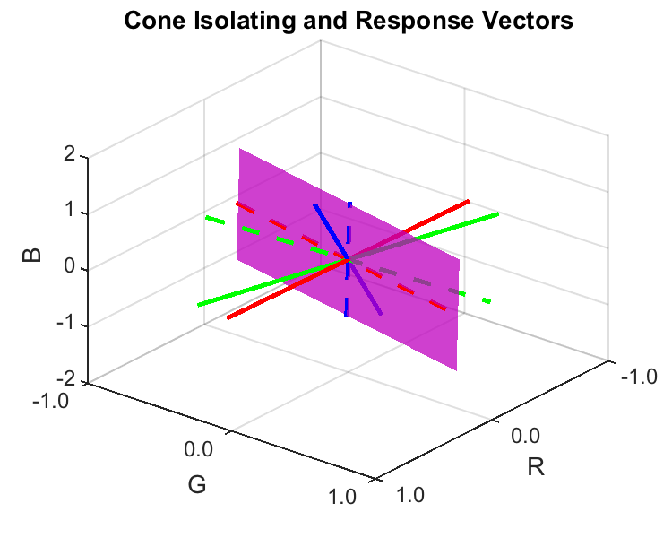

Contents
- Function implementing the isetbio validation code
- Hello
- Get and plot Stiles-Burch 10-degree color matching functions
- Load Stockman-Sharpe 10-degree cone fundamentals
- Find the stimuli that isolate each of the cones.
- Get the cmf spectrum locus normalized to simplex
- Get the cone isolating dirs normalized to the simplex
- Make a 3D plot of the spectrum locus
- Plot where the cone isolating dirs lie on the simplex
- Plot in the r-g chromaticity plane
- Figure out what chromaticities we can obtain with positive combinations of the cone isolating directions.
- Plot where the cone isolating dirs lie on the diagram
- Save validation data
function varargout = cbColorMatching_StilesBurch10Cmfs(varargin) % % Connections between color matching functions and cone fundamentals, Stiles-Burch 10. % % Shows that Stockman-Sharpe 10 degree fundamentals are a linear % transformation of the Stiles-Burch 10 degree Cmfs, and illustrates how % the cone isolating vectors and spectrum locus look in the RGB and rg % diagrams. % % The Stiles-Burch Cmfs are expressed with respect to primaries at % 645.16, 526.32, 444.44 nm. % % (c) David Brainard and Andrew Stockman, 2015 varargout = UnitTest.runValidationRun(@ValidationFunction, nargout, varargin); end
Function implementing the isetbio validation code
function ValidationFunction(runTimeParams)
Hello
UnitTest.validationRecord('SIMPLE_MESSAGE', sprintf('%s',mfilename)); outputDir = sprintf('%s_Output',mfilename); if (~exist(outputDir,'dir')) mkdir(outputDir); end
Get and plot Stiles-Burch 10-degree color matching functions
Also spline to 1 nm and 10 nm sampling for plotting purposes.
load T_stiles10; data.wls = SToWls(S_stiles10); data.S_stiles10 = S_stiles10; data.T_stiles10 = T_stiles10; % These splines go from 390 to 750, which seems sufficient S_10nm = [390 10 37]; data.wls_10nm = SToWls(S_10nm); data.T_stiles10_10nm = SplineCmf(data.wls,data.T_stiles10,S_10nm); S_1nm = [390 1 361]; data.wls_1nm = SToWls(S_1nm); data.T_stiles10_1nm = SplineCmf(data.wls,data.T_stiles10,S_1nm); clear S_stiles10 T_stiles10 if (runTimeParams.generatePlots) [stilesBurch10Fig,figParams] = cbFigInit; figParams.xLimLow = 350; figParams.xLimHigh = 750; figParams.xTicks = [350 400 450 500 550 600 650 700 750]; figParams.xTickLabels = {'^{ }350_{ }' '^{ }400_{ }' '^{ }450_{ }' '^{ }500_{ }' ... '^{ }550_{ }' '^{ }600_{ }' '^{ }650_{ }' '^{ }700_{ }' '^{ }750_{ }'}; figParams.yLimLow = -1; figParams.yLimHigh = 4; figParams.yTicks = [-1 0 1 2 3 4]; figParams.yTickLabels = {'-1.0 ' ' 0.0 ' ' 1.0 ' ' 2.0 ' ' 3.0 ' ' 4.0 '}; plot(data.wls_1nm,data.T_stiles10_1nm(1,:)','r','LineWidth',figParams.lineWidth); plot(data.wls_1nm,data.T_stiles10_1nm(2,:)','g','LineWidth',figParams.lineWidth); plot(data.wls_1nm,data.T_stiles10_1nm(3,:)','b','LineWidth',figParams.lineWidth); xlabel('Wavelength (nm)','FontSize',figParams.labelFontSize); ylabel('CMF (energy units)','FontSize',figParams.labelFontSize); title('Stiles-Burch 10-degree CMFs','FontSize',figParams.titleFontSize); cbFigAxisSet(stilesBurch10Fig,figParams); % Save the figure FigureSave(fullfile(outputDir,[mfilename '_Cmfs']),stilesBurch10Fig,figParams.figType); end
Load Stockman-Sharpe 10-degree cone fundamentals
load T_cones_ss10 data.T_cones10_1nm = SplineCmf(S_cones_ss10,T_cones_ss10,data.wls_1nm); % Fit with linear transform of cmf's, just to show that it works. data.M_CmfToCones = ((data.T_stiles10_1nm')\(data.T_cones10_1nm'))'; data.T_cones10_fit_1nm = data.M_CmfToCones*data.T_stiles10_1nm; if (runTimeParams.generatePlots) [stockmanSharpe10Fig,figParams] = cbFigInit; figParams.xLimLow = 350; figParams.xLimHigh = 750; figParams.xTicks = [350 400 450 500 550 600 650 700 750]; figParams.xTickLabels = {'^{ }350_{ }' '^{ }400_{ }' '^{ }450_{ }' '^{ }500_{ }' ... '^{ }550_{ }' '^{ }600_{ }' '^{ }650_{ }' '^{ }700_{ }' '^{ }750_{ }'}; figParams.yLimLow = 0; figParams.yLimHigh = 1; figParams.yTicks = [0 0.5 1]; figParams.yTickLabels = {' 0.0 ' ' 0.5 ' ' 1.0 '}; % Plot the fundamentals. plot(data.wls_1nm,data.T_cones10_1nm(1,:)','r','LineWidth',figParams.lineWidth); plot(data.wls_1nm,data.T_cones10_1nm(2,:)','g','LineWidth',figParams.lineWidth); plot(data.wls_1nm,data.T_cones10_1nm(3,:)','b','LineWidth',figParams.lineWidth); % Pop on top the fit from Stiles-Burch 10 degree cmfs. plot(data.wls_1nm,data.T_cones10_fit_1nm(1,:)','k:','LineWidth',figParams.lineWidth-1); plot(data.wls_1nm,data.T_cones10_fit_1nm(2,:)','k:','LineWidth',figParams.lineWidth-1); plot(data.wls_1nm,data.T_cones10_fit_1nm(3,:)','k:','LineWidth',figParams.lineWidth-1); xlabel('Wavelength (nm)','FontSize',figParams.labelFontSize); ylabel('Cone Fundamental (energy units)','FontSize',figParams.labelFontSize); title('Stiles-Burch 10-degree CMFs','FontSize',figParams.titleFontSize); cbFigAxisSet(stockmanSharpe10Fig,figParams); % Save the figure FigureSave(fullfile(outputDir,[mfilename '_TransformToSS10ConeFundamentals']),stockmanSharpe10Fig,figParams.figType); end
Find the stimuli that isolate each of the cones.
Get the isolating directions using straightforward linear algebra.
data.MConesToCmf = inv(data.M_CmfToCones); data.coneIsolatingCmfDirs = data.MConesToCmf*[[1 0 0]', [0 1 0]', [0 0 1]'];
Get the cmf spectrum locus normalized to simplex
for i = 1:size(data.T_stiles10_1nm,2); data.T_stiles10_1nm_simplex(:,i) = data.T_stiles10_1nm(:,i)/sum(data.T_stiles10_1nm(:,i)); end for i = 1:size(data.T_stiles10_10nm,2); data.T_stiles10_10nm_simplex(:,i) = data.T_stiles10_10nm(:,i)/sum(data.T_stiles10_10nm(:,i)); end
Get the cone isolating dirs normalized to the simplex
for i = 1:size(data.coneIsolatingCmfDirs,2); data.coneIsolatingCmfDirs_simplex(:,i) = data.coneIsolatingCmfDirs(:,i)/sum(data.coneIsolatingCmfDirs(:,i)); end
Make a 3D plot of the spectrum locus
This is a pretty complicated plot. It shows the spectrum locus in the RGB color matching space as well as projected onto the simplex (plane defined by R+G+B = 1).
It also shows the three cone isolating directions, both in the positive (+cone isomeriation) and negative (-cone isomerization) directions. Positive is solid lines, negative dashed lines. These directions contain negaive primary power and are not physically realizable.
if (runTimeParams.generatePlots)
[stilesBurch10SpectrumLocusFig,figParams] = cbFigInit;
figParams.xLimLow = -3;
figParams.xLimHigh = 4;
figParams.xTicks = [-3 -2 -1 0 1 2 3 4];
figParams.xTickLabels = {'-3.0 ' '-2.0 ' '-1.0 ' ' 0.0 ' ' 1.0 ' ' 2.0 ' ' 3.0 ' ' 4.0 '};
figParams.yLimLow = -0.5;
figParams.yLimHigh = 3.0;
figParams.yTicks = [-0.5 0 0.5 1.0 1.5 2.0 2.5 3.0];
figParams.yTickLabels = {'-0.5 ' ' 0.0 ' ' 0.5 ' ' 1.0 ' ' 1.5 ' '2.0 ' ' 2.5 ' ' 3.0 '};
figParams.zLimLow = -0.5;
figParams.zLimHigh = 2.0;
figParams.zTicks = [-0.5 0 0.5 1.0 1.5 2.0 ];
figParams.zTickLabels = {'-0.5' ' 0.0 ' ' 0.5 ' ' 1.0 ' ' 1.5 ' ' 2.0 '};
% Plot the spectrum locus
plot3(data.T_stiles10_1nm(1,:)',data.T_stiles10_1nm(2,:)',data.T_stiles10_1nm(3,:)', ...
'k','LineWidth',figParams.lineWidth);
plot3(data.T_stiles10_10nm(1,:)',data.T_stiles10_10nm(2,:)',data.T_stiles10_10nm(3,:)', ...
'ko','MarkerFaceColor','k','MarkerSize',figParams.markerSize-14);
% Plot the spectrum locus on the simplex plane
plot3(data.T_stiles10_1nm_simplex(1,:)',data.T_stiles10_1nm_simplex(2,:)',data.T_stiles10_1nm_simplex(3,:)', ...
'y','LineWidth',figParams.lineWidth);
% plot3(data.T_stiles10_10nm_simplex(1,:)',data.T_stiles10_10nm_simplex(2,:)',data.T_stiles10_10nm_simplex(3,:)', ...
% 'yo','MarkerFaceColor','y','MarkerSize',figParams.markerSize-14);
% Plot the cone isolating directions
plot3([0 data.coneIsolatingCmfDirs(1,1)], ...
[0 data.coneIsolatingCmfDirs(2,1)], ...
[0 data.coneIsolatingCmfDirs(3,1)], ...
'r','LineWidth',figParams.lineWidth+1);
plot3([0 data.coneIsolatingCmfDirs(1,2)], ...
[0 data.coneIsolatingCmfDirs(2,2)], ...
[0 data.coneIsolatingCmfDirs(3,2)], ...
'g','LineWidth',figParams.lineWidth+1);
plot3([0 data.coneIsolatingCmfDirs(1,3)], ...
[0 data.coneIsolatingCmfDirs(2,3)], ...
[0 data.coneIsolatingCmfDirs(3,3)], ...
'b','LineWidth',figParams.lineWidth+1);
plot3([-data.coneIsolatingCmfDirs(1,1) 0], ...
[-data.coneIsolatingCmfDirs(2,1) 0], ...
[-data.coneIsolatingCmfDirs(3,1) 0], ...
'r--','LineWidth',figParams.lineWidth+1);
plot3([-data.coneIsolatingCmfDirs(1,2) 0], ...
[-data.coneIsolatingCmfDirs(2,2) 0], ...
[-data.coneIsolatingCmfDirs(3,2) 0], ...
'g--','LineWidth',figParams.lineWidth+1);
plot3([-data.coneIsolatingCmfDirs(1,3) 0], ...
[-data.coneIsolatingCmfDirs(2,3) 0], ...
[-data.coneIsolatingCmfDirs(3,3) 0], ...
'b--','LineWidth',figParams.lineWidth+1);
 Plot where the cone isolating dirs lie on the simplex
L and S directions intersect the plane on their positive excursions, while M intersects the plane on its negative excursion. Indicate this graphically by not filling in the M cone point.
plot3([0 data.coneIsolatingCmfDirs_simplex(1,1)], ... [0 data.coneIsolatingCmfDirs_simplex(2,1)], ... [0 data.coneIsolatingCmfDirs_simplex(3,1)], ... 'ro','MarkerFaceColor','r','MarkerSize',figParams.markerSize-10); plot3([0 data.coneIsolatingCmfDirs_simplex(1,2)], ... [0 data.coneIsolatingCmfDirs_simplex(2,2)], ... [0 data.coneIsolatingCmfDirs_simplex(3,2)], ... 'go','MarkerSize',figParams.markerSize-10); plot3([0 data.coneIsolatingCmfDirs_simplex(1,3)], ... [0 data.coneIsolatingCmfDirs_simplex(2,3)], ... [0 data.coneIsolatingCmfDirs_simplex(3,3)], ... 'bo','MarkerFaceColor','b','MarkerSize',figParams.markerSize-10); % Fill in simplex plane as a transparent light gray surface. % I fussed quite a bit by hand to define the points so that the % resulting plane more or less fills the graph. fill3([2 -3 -6.5 -1.5]',[-0.5 -0.5 3 3]',[-0.5 4.5 4.5 -0.5],[0.75 0.75 0.75],'EdgeColor','None','FaceAlpha',0.75); % This latex magic puts a bar over the labels, which we want here. But % it also changes their font. Not sure how to get the font to stay put % while still putting an overbar over the symbols. xlabel('$$\bar{r}$$','FontSize',figParams.labelFontSize,'interpreter','latex'); ylabel('$$\bar{g}$$','FontSize',figParams.labelFontSize,'interpreter','latex'); zlabel('$$\bar{b}$$','FontSize',figParams.labelFontSize,'interpreter','latex'); title('Stiles-Burch 10-degree CMFs','FontSize',figParams.titleFontSize); cbFigAxisSet(stilesBurch10SpectrumLocusFig,figParams); zlim([figParams.zLimLow figParams.zLimHigh]); set(gca,'ZTick',figParams.zTicks); set(gca,'ZTickLabel',figParams.zTickLabels); set(gca,'XDir','Reverse'); set(gca,'YDir','Reverse'); az = -51; el = 34; view(az,el); grid on % Save the figure FigureSave(fullfile(outputDir,[mfilename '_SpectrumLocus_RGB3D']),stilesBurch10SpectrumLocusFig,'png');
end
Plot in the r-g chromaticity plane
if (runTimeParams.generatePlots)
[chromaticityFig,figParams] = cbFigInit;
figParams.xLimLow = -2.5;
figParams.xLimHigh = 3;
figParams.xTicks = [-2.5 -2 -1.5 -1 -0.5 0 0.5 1 1.5 2 2.5 3.0];
figParams.yTickLabels = {'^{ }-2.5_{ }' '^{ }-2.0_{ }' '^{ }-1.5_{ }' '^{ }-1.0_{ }' '^{ }-0.5_{ }' '^{ }0.0_{ }' ...
'^{ }0.5_{ }' '^{ }1.0_{ }' '^{ }1.5_{ }' '^{ }2.0_{ }' '^{ }2.5_{ }' '^{ }3.0_{ }'};
figParams.yLimLow = -2.5;
figParams.yLimHigh = 3;
figParams.yTicks = [-2.5 -2 -1.5 -1 -0.5 0 0.5 1 1.5 2 2.5 3.0];
figParams.yTickLabels = {'^{ }-2.5_{ }' '^{ }-2.0_{ }' '^{ }-1.5_{ }' '^{ }-1.0_{ }' '^{ }-0.5_{ }' '^{ }0.0_{ }' ...
'^{ }0.5_{ }' '^{ }1.0_{ }' '^{ }1.5_{ }' '^{ }2.0_{ }' '^{ }2.5_{ }' '^{ }3.0_{ }'};
 Figure out what chromaticities we can obtain with positive combinations of the cone isolating directions.
Get a whole bunch of feasible points
weights = rand(3,50000);
randRGB = data.coneIsolatingCmfDirs*weights;
% Convert to rg chromaticity.
%
% XYZToxyY is designed for CIE 1931 conventins, but calculation of
% first two coordinates is exactly what we want here (r = R/(R+G+B), g = g/(R+G+B)
randrgY = XYZToxyY(randRGB);
randrg = randrgY(1:2,:);
% Split the points into those with r chromaticity less than that of L's
% and those with r chromaticity greater than that of M's. These are
% the two groups we see if we plot them all.
group1index = find(randrg(1,:) <= data.coneIsolatingCmfDirs_simplex(1,1));
group2index = find(randrg(1,:) >= data.coneIsolatingCmfDirs_simplex(1,2));
UnitTest.assert(length(group1index)+length(group2index) == length(randrg(1,:)),'all points accounted for');
% Find convex hull of each group and plot as a transparent plane
dt1 = delaunayTriangulation(randrg(1,group1index)',randrg(2,group1index)');
k1 = convexHull(dt1);
fill(dt1.Points(k1,1),dt1.Points(k1,2),[0.75 0.75 0.75],'EdgeColor','None','FaceAlpha',0.75);
dt2 = delaunayTriangulation(randrg(1,group2index)',randrg(2,group2index)');
k2 = convexHull(dt2);
fill(dt2.Points(k2,1),dt2.Points(k2,2),[0.75 0.75 0.75],'EdgeColor','None','FaceAlpha',0.75);
% Plot the spectrum locus on the diagram
plot(data.T_stiles10_1nm_simplex(1,:)',data.T_stiles10_1nm_simplex(2,:)', ...
'k','LineWidth',figParams.lineWidth);
plot(data.T_stiles10_10nm_simplex(1,:)',data.T_stiles10_10nm_simplex(2,:)', ...
'ko','MarkerFaceColor','y','MarkerSize',figParams.markerSize-14);
Plot where the cone isolating dirs lie on the diagram
The M-cone chromaticity corresponds to the negative direction of the primary, so it's plotted without a fill.
plot([data.coneIsolatingCmfDirs_simplex(1,1)], ... [data.coneIsolatingCmfDirs_simplex(2,1)], ... 'ro','MarkerFaceColor','r','MarkerSize',figParams.markerSize-10); plot([data.coneIsolatingCmfDirs_simplex(1,2)], ... [data.coneIsolatingCmfDirs_simplex(2,2)], ... 'go','MarkerSize',figParams.markerSize-10); plot([data.coneIsolatingCmfDirs_simplex(1,3)], ... [data.coneIsolatingCmfDirs_simplex(2,3)], ... 'bo','MarkerFaceColor','b','MarkerSize',figParams.markerSize-10); xlabel('r chromaticity','FontSize',figParams.labelFontSize); ylabel('g chromaticity','FontSize',figParams.labelFontSize); title('Stiles-Burch 10-degree CMFs','FontSize',figParams.titleFontSize); cbFigAxisSet(chromaticityFig,figParams); % Save the figure FigureSave(fullfile(outputDir,[mfilename '_SpectrumLocus_rgChrom']),chromaticityFig,figParams.figType);

end
Save validation data
UnitTest.validationData('validateDataStruct', data);
end % Legend, with tweak to make lines long enough so that dash shows. % Note the extra spaces that preface the actual legend text. Ugh. % [~,legendChildObjs] = legend({['^{ }' figParams.legendExtraSpaceStr ' Linear '],[ '^{ }' figParams.legendExtraSpaceStr ' Model Eye Based ']},... % 'Location','NorthWest','FontSize',figParams.legendFontSize); % lineObjs = findobj(legendChildObjs, 'Type', 'line'); % xCoords = get(lineObjs, 'XData') ; % for lineIdx = 1:length(xCoords) % if (length(xCoords{lineIdx}) ~= 2), continue; end % set(lineObjs(lineIdx), 'XData', xCoords{lineIdx} + [0 figParams.legendLineTweak]) % end